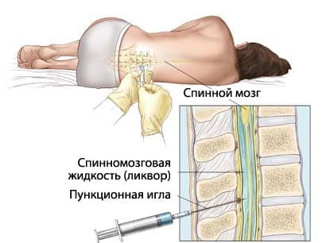

Среди многочисленных человеческих болезней менингит – одна из самых опасных. Можно перенести «на ногах» воспаление легких, можно годами ходить с туберкулезом, можно с помощью «целителей» в течение длительного времени пытаться вылечиться от венерических болезней. С менингитом подобные «номера» не проходят – или в больницу, или…
Менингит – болезнь известная. По крайней мере, средний человек, без какого-либо специального медицинского образования, слово «менингит» знает и, хотя особенности самой болезни не очень понятны, менингита боятся все. Врач «скорой помощи» может сказать: «У вашего ребенка ангина (грипп, пневмония, энтероколит, гайморит и т. д.). Быстренько собирайтесь в больницу». В ответ он обязательно услышит: «Доктор, а дома полечиться никак нельзя?». Но если будет произнесено слово «менингит», пусть даже не категорично: «У вас менингит!», а с сомнением: «Похоже на менингит», – можно с уверенностью заявить: ни о каком лечении дома нормальный человек даже не заикнется.
Такое отношение к менингиту в целом понятно – с того времени, как появились возможности его (менингит) лечить, не прошло и 70-ти лет. Но если смертность от большинства детских болезней уменьшилась за это время в 10–20 и более раз, то при менингите – лишь в 2 раза.
Так что же это за болезнь такая, менингит?
Прежде всего, следует отметить, что менингит – болезнь инфекционная. Т. е. непосредственной причиной заболевания являются определенные микробы. Большинство человеческих инфекций позволяет установить четкую взаимосвязь между названием болезни и именем конкретного ее возбудителя. Сифилис – бледная спирохета, скарлатина – стрептококк, сальмонеллез – сальмонелла, туберкулез – палочка Коха, СПИД – вирус иммунодефицита и т. п. В то же время конкретной связи «менингит – возбудитель менингита» нет.
Под самим словом «менингит» подразумевается воспаление оболочек головного мозга, а причиной этого воспаления может быть огромное число микроорганизмов – бактерий, вирусов, грибков. Инфекционисты не без уверенности заявляют, что при определенных условиях любой микроорганизм может вызвать менингит у человека любого возраста. Отсюда понятно, что менингиты бывают разными – и по скорости развития, и по тяжести состояния, и по частоте возникновения, и, что особенно важно, по способам лечения. Объединяет все менингиты одно – реальная угроза жизни и высокая вероятность осложнений.
Для развития менингита конкретный возбудитель должен попасть в полость черепа и вызвать воспаление оболочек головного мозга. Иногда это происходит при возникновении очагов инфекции в непосредственной близости от оболочек мозга – при гнойном отите, например, или при гайморитах. Нередко, причиной менингита является черепно-мозговая травма. Но чаще всего в полость черепа микробы попадают с током крови. Очевидно, что сам факт попадания микроба в кровь, сама возможность его «заноса» и последующего размножения на мозговых оболочках обусловлены состоянием иммунитета.
Следует заметить, что имеется целый ряд, как правило, врожденных дефектов иммунной системы, предрасполагающий к заболеванию менингитом. Неудивительно, что в некоторых семьях все дети болеют менингитом, – хотя болезнь эта не такая уж и частая, в сравнении, например, с ангиной, коклюшем, ветрянкой или краснухой. Но если роль иммунитета в целом понятна, то до настоящего времени не удается найти убедительного объяснения тому факту, что мальчики болеют менингитом в 2–4 раза чаще, чем девочки.
В зависимости от вида возбудителя менингиты бывают вирусными, бактериальными, грибковыми. Некоторые простейшие (например, амеба и токсоплазма) тоже могут вызвать менингит.
Развитие вирусного менингита может сопровождать течение широко известных инфекций – ветряной оспы, кори, краснухи, эпидемического паротита, поражение мозговых оболочек встречается при гриппе, при инфекциях, вызванных вирусами герпеса. У ослабленных больных, у стариков, у младенцев встречаются менингиты, вызванные грибками (понятно, что в этих ситуациях именно недостаточность иммунитета играет ведущую роль в возникновении болезни).
Особое значение имеют менингиты бактериальные. Любой гнойный очаг в организме – пневмония, инфицированный ожог, ангина, разнообразные абсцессы и т. п. – может стать причиной менингита, при условии, что возбудитель попадет в кровь и с током крови достигнет мозговых оболочек. Понятно, что всем известные возбудители гнойных процессов (стафилококки, стрептококки, синегнойные палочки и т. д.) и будут в этом случае возбудителем менингита. Одним из самых страшных является менингит туберкулезный – почти забытый, сегодня он встречается все чаще и чаще.
В то же время существует микроорганизм, вызывающий менингиты наиболее часто (60–70 % всех бактериальных менингитов). Неудивительно, что он так и называется – менингококк. Заражение происходит воздушно-капельным путем, менингококк оседает на слизистых оболочках носоглотки и может вызвать состояние, очень сходное с обычной респираторной вирусной инфекцией – небольшой насморк, покраснение горла – менингококковый назофарингит. Я не зря употребил словосочетание «может вызвать» – дело в том, что попадание менингококка в организм довольно редко приводит к возникновению болезни – ведущая роль здесь принадлежит совершенно особым индивидуальным сдвигам в иммунитете. Легко объяснимы, в этой связи, два факта: первый – опасность развития менингита при контактах, например, в детских учреждениях составляет 1/1000 и второй – частое обнаружение менингококка в носоглотке у совершенно здоровых лиц (от 2 до 5 % детей являются здоровыми носителями).
Неспособность организма локализовать микроб в носоглотке сопровождается проникновением менингококка через слизистую оболочку в кровь. С током крови он попадает в мозговые оболочки, глаза, уши, суставы, легкие, надпочечники, и в каждом из этих органов может возникнуть очень опасный воспалительный процесс. Очевидно, что поражение мозговых оболочек сопровождается развитием менингококкового менингита.
Иногда менингококк попадает в кровь быстро и в огромных количествах. Возникает менингококковый сепсис или менингококкемия – самая, пожалуй, страшная из всех детских инфекционных болезней. Микроб выделяет токсины, под их воздействием происходит множественная закупорка мелких сосудов, нарушается свертываемость крови, на теле появляются множественные кровоизлияния. Иногда уже через несколько часов после начала болезни происходит кровоизлияние в надпочечники, резко падает артериальное давление и человек погибает.
Существует удивительная по своему драматизму закономерность в возникновении менингококкемии, которая состоит в следующем. Дело в том, что при проникновении микроба в кровь он начинает реагировать с определенными антителами, пытающимися менингококк уничтожить. Доказано, что существует перекрестная активность ряда антител, т. е. если в большом количестве имеются антитела, например, к стрептококку, пневмококку, стафилококку, то эти антитела способны оказывать тормозящее воздействие на менингококк. Вот и получается, что дети болезненные, имеющие хронические очаги инфекций, перенесшие воспаление легких и множество других болячек, менингококкемией не болеют почти никогда. «Страшность» менингококкемии как раз и состоит в том, что в течение 10–12 часов может погибнуть абсолютно здоровый и никогда ранее не болевший ребенок!
Вся приведенная выше информация не имеет своей целью запугать читателя. Менингиты лечатся. Но результаты (продолжительность и тяжесть болезни, вероятность осложнений) теснейшим образом связаны со временем, которое будет потеряно до начала адекватной терапии.
Очевидно, что вышеупомянутые «сроки начала адекватной терапии» зависят от того, когда люди-человеки обратятся за медицинской помощью. Отсюда настоятельная необходимость конкретных знаний, чтобы потом «не было мучительно больно»…
Воспалению мозговых оболочек присущ целый ряд симптомов, но многие из них не являются специфичными, т. е. их (симптомов) возникновение возможно и при других болезнях, значительно менее опасных. Чаще всего так оно и случается, но малейшее подозрение на развитие менингита не позволяет рисковать, требует немедленной госпитализации и тщательного врачебного наблюдения.
Рассмотрим теперь наиболее типичные ситуации, каждая из которых не позволяет исключить развития менингита.
1 Если на фоне любой инфекционной болезни – ОРЗ, ветрянки, кори, свинки, краснухи, «лихорадки» на губах и т. п. – возможно не в начале заболевания (даже чаще именно не в начале) появляется интенсивная головная боль, настолько сильная, что она волнует больше, чем все остальные симптомы, если головная боль сопровождается тошнотой и рвотой.
2 Во всех случаях, когда на фоне повышенной температуры тела имеются боли в спине и шее, усиливающиеся при движении головы.
3 Сонливость, спутанное сознание, тошнота, рвота.
4 Судороги любой интенсивности и любой продолжительности.
5 У детей первого года жизни: лихорадка + монотонный плач + выбухание родничка.
6 Любая (!!!) сыпь на фоне повышенной температуры.
Помимо вышеописанных симптомов совершенно определенным образом изменяются некоторые рефлексы, и это обнаружить может только врач.
Еще раз повторяю: важно помнить и понимать, что такие нередкие симптомы, как рвота, тошнота и головная боль, в обязательном порядке требуют врачебного осмотра – береженого Бог бережет.
Любая сыпь на фоне повышенной температуры может оказаться менингококкемией. Вы (или ваши умные соседи) можете пребывать в уверенности, что это краснуха, корь или «диатез». Но врач должен сыпь увидеть, и чем быстрее, тем лучше. Если же элементы сыпи имеют вид кровоизлияний, если новые высыпания появляются быстро, если это сопровождается рвотой и высокой температурой – следует использовать любой шанс для того, чтобы больной немедленно оказался в больнице, желательно сразу в инфекционной. Помните: при менингококкемии счет идет не на часы, а на минуты.
Следует отметить, что врач даже самой высочайшей квалификации может диагностировать менингит с абсолютной уверенностью только в одном случае: когда симптомы раздражения мозговых оболочек сочетаются с типичной сыпью, которая описана выше. Во всех остальных случаях диагноз можно лишь заподозрить с разной степенью вероятности.
Единственным способом подтверждения или исключения менингита является спинномозговая (поясничная) пункция. Дело в том, что в головном и спинном мозге циркулирует особая спинномозговая жидкость – ликвор. При любом воспалении мозга и (или) его оболочек в ликворе накапливаются воспалительные клетки, вид ликвора (в норме бесцветный и прозрачный) часто меняется – он становится мутным. Исследование ликвора позволяет не только установить диагноз менингита, но и ответить на вопрос о том, какой это менингит – бактериальный (гнойный) или вирусный, что имеет решающее значение в выборе варианта лечения.
К сожалению, на чисто обывательском уровне очень распространено мнение об огромных опасностях, которые таит в себе спинномозговая пункция. На самом деле эти страхи абсолютно не обоснованы – прокол спинномозгового канала проводится между поясничными позвонками на том уровне, где от спинного мозга уже не отходят никакие нервные стволы, поэтому никаких мифических параличей после этой манипуляции не бывает. С юридической точки зрения врач обязан провести спинномозговую пункцию при реальном подозрении на менингит. Следует отметить, что пункция имеет не только диагностическую, но и лечебную целесообразность.

При любом менингите, как правило, имеет место повышение внутричерепного давления, следствием последнего и является сильнейшая головная боль. Взятие небольшого количества ликвора позволяет снизить давление и существенно облегчает состояние больного. Во время пункции в спинномозговой канал нередко вводят антибиотики. Так, например, при туберкулезном менингите единственный шанс спасти больного – частые (нередко ежедневные) пункции, во время которых в спинномозговой канал вводится противотуберкулезный антибиотик – особый вариант стрептомицина.
С учетом приведенной выше информации становится понятным, что лечение менингита зависит от вида возбудителя. Главное в терапии бактериальных менингитов – использование антибиотиков. Выбор конкретного лекарства зависит от чувствительности конкретной бактерии и от того, способен ли антибиотик проникать в спинномозговую жидкость. При своевременном использовании антибактериальных препаратов шансы на успех очень велики.
С вирусными менингитами ситуация принципиально иная – противовирусных препаратов практически нет, исключение – ацикловир, но используется он лишь при герпетической инфекции (напомню, что ветряная оспа – один из вариантов герпеса). К счастью, вирусные менингиты имеют более благоприятное течение в сравнении с бактериальными.
Но помощь больному не ограничивается лишь воздействием на возбудителя. Врач имеет возможность нормализовать внутричерепное давление, устранить токсикоз, улучшить работу нервных клеток и сосудов головного мозга, применить мощные противовоспалительные средства.
Своевременно начатое лечение менингита в течение двух-трех дней приводит к значительному улучшению состояния, а в дальнейшем почти всегда к полному излечению без каких-либо последствий.
Еще раз подчеркиваю: своевременно начатое лечение…
Е.О.Комаровский. "Здоровье ребенка"